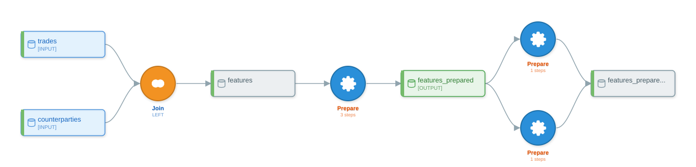

Examples 03 — Counterparty Features and Forward-Curve Versioning¶
What you'll learn¶
This chapter walks two end-to-end conversions in the front-office commodity-trading domain. The first builds a counterparty-default feature set for a credit-risk model from a trade ledger joined to a counterparty master, exercising a long PREPARE chain (FillEmptyWithValue, Binner, CategoricalEncoder, RemoveRowsOnEmpty), a binary JOIN recipe, and a GREL formula derived from assign(...). The second handles a forward-curve slowly-changing-dimension table — splitting current quotes from historical ones via the canonical cond / ~cond shape — and confirms that py-iku consolidates it into exactly one SPLIT recipe with two outputs, matching the ground truth in Chapter 9.
Both examples use only the public API (convert, DataikuFlow). Both verify the produced flow by enumerating recipes and steps; neither asserts on cosmetic details (recipe names, dataset names) that the rule-based naming pass owns.
Why these two¶
The chapter pairs two patterns that show up constantly on a commodities trading desk and that exercise complementary parts of py-iku:
- A flow-shape pattern: a counterparty feature pipeline with one input join, several PREPARE steps, and a final feature dataset. It shows how
assign(...)becomes aCreateColumnWithGRELstep, howpd.qcutbecomes aBinnerprocessor, and howpd.get_dummiesbecomes aCategoricalEncoderprocessor. - A structural-inference pattern: a forward-curve SCD router that uses an explicit
cond = ...followed bydf[cond]anddf[~cond]. Chapter 9 documents this as the only filter shape the rule-based detector consolidates today; this chapter verifies the consolidation againstconvert().
Neither script writes to a partition key, neither sets a connection. The intent is not to make these scripts production-shaped but to give a reader two concrete pandas-to-flow conversions whose every output is traceable back to a line of source.
Example 1 — Counterparty default-prediction features¶
Schema¶
The example uses two inputs that match common front-office credit-risk shapes. Both are declared here once because they are out-of-running-example schemas (the running example uses orders / customers / products):
trades.csv—trade_id,trader_id,trade_date,value_date,counterparty_id,instrument(e.g.WTI-DEC25),commodity(CRUDE/NATGAS/POWER),notional,price,currency,buy_sell,book,region,delivery_location,booked_at.counterparty_master.csv—counterparty_id,name,country,credit_rating(AAA/AA/A/BBB/BB/B/CCC/D/NR),exposure_limit(USD),current_exposure(USD),master_agreement(ISDA/NAESB/EFET/GTMA/OTHER),last_review_date,watch_list_flag(Y/N).
The pipeline merges trades to their counterparty record on counterparty_id, derives a days_since_last_trade feature against a hardcoded reference date, fills missing credit_rating values with "NR" (the standard not-rated code), bins current_exposure into five quantile buckets Q1..Q5, one-hot-encodes credit_rating, drops rows whose days_since_last_trade is null, and writes the resulting feature set as Parquet.
Source¶
import pandas as pd
from py2dataiku import convert
source = """
import pandas as pd
trades = pd.read_csv("trades.csv")
counterparties = pd.read_csv("counterparty_master.csv")
features = trades.merge(counterparties, on="counterparty_id", how="left")
features = features.assign(days_since_last_trade=lambda x: x["trade_date"] - "2026-04-26")
features["credit_rating"] = features["credit_rating"].fillna("NR")
features["exposure_bucket"] = pd.qcut(features["current_exposure"], q=5, labels=["Q1", "Q2", "Q3", "Q4", "Q5"])
features = pd.get_dummies(features, columns=["credit_rating"])
features = features.dropna(subset=["days_since_last_trade"])
features.to_parquet("counterparty_features.parquet")
"""
flow = convert(source)
The reference date is hardcoded as a string ("2026-04-26") rather than computed via pd.Timestamp("today"). The rule-based analyzer compiles the lambda body verbatim into a GREL expression — anything inside the lambda becomes the GREL formula, so a string subtraction is what the produced step records. A DSS engineer importing this flow would replace the right-hand-side with the GREL idiom dateDiff(today(), val("trade_date"), "days") before running the recipe.
Convert¶
The rule-based analyzer produces four recipes for this script:
print(len(flow.recipes)) # 4
print([r.recipe_type.value for r in flow.recipes])
# ['join', 'prepare', 'prepare', 'prepare']
print(len(flow.datasets)) # 5
One JOIN (the merge) and three PREPARE recipes covering the seven element-wise transformations in the script. The PREPAREs do not collapse into a single PREPARE because pd.get_dummies(features, columns=["credit_rating"]) and the bare-assignment features["exposure_bucket"] = pd.qcut(...) are emitted as siblings against the same intermediate dataset rather than as a linear chain — the optimizer's PREPARE-merge rule is fan-out aware (see Chapter 10) and refuses to merge across the branch.
Inspect every PrepareStep¶
Walk the recipes and print the processor type plus the params that drive the DSS step:
for r in flow.recipes:
if r.recipe_type.value != "prepare":
continue
print(f"recipe={r.name} input={r.inputs} output={r.outputs}")
for i, s in enumerate(r.steps):
print(f" [{i}] {s.processor_type.value}: {s.params}")
Running that on the produced flow prints five PREPARE steps in total, distributed across the three PREPARE recipes:
recipe=prepare_2 input=['features'] output=['features_prepared']
[0] RemoveRowsOnEmpty: {'columns': ['days_since_last_trade'], 'keep': False}
[1] CreateColumnWithGREL: {'column': 'days_since_last_trade', 'expression': "x['trade_date'] - '2026-04-26'"}
[2] CategoricalEncoder: {'columns': ['credit_rating'], 'encoding': 'one_hot'}
recipe=prepare_3 input=['features_prepared'] output=['features_prepared_prepared']
[0] FillEmptyWithValue: {'column': 'credit_rating', 'value': 'NR'}
recipe=prepare_4 input=['features_prepared'] output=['features_prepared_prepared']
[0] Binner: {'column': 'current_exposure', 'output_column': "features['exposure_bucket']", 'bins': 5, 'mode': 'qcut'}
Four observations are worth pinning down before treating this output as canonical:
- The
assign(days_since_last_trade=lambda x: x["trade_date"] - "2026-04-26")lambda compiles to aCreateColumnWithGRELstep with the GREL expression literally tracking the lambda body. Chapter 9 covers the GREL compilation antecedent. pd.qcut(features["current_exposure"], q=5, labels=["Q1", "Q2", "Q3", "Q4", "Q5"])becomes aBinnerprocessor withbins=5andmode='qcut'. Thelabels=[...]keyword is silently dropped by the rule-based analyzer — the produced step does not carry the bucket names. A reader who needsQ1..Q5labels in the output column must add a follow-onColumnRenamerstep in DSS, or use the LLM path (Chapter 7), which preserves the label list. This is a documented gap in the rule-based analyzer rather than a bug.- The Binner's
output_columnis recorded asfeatures['exposure_bucket']because the assignment target is a subscript expression; downstream consumers should rename the column or use the Binner's own output-column setting before the next recipe. pd.get_dummies(features, columns=["credit_rating"])becomes aCategoricalEncoderstep withencoding='one_hot'. The encoder is recorded against the same recipe asRemoveRowsOnEmpty(thedropna) because both transformations are bare-assignment-style updates tofeaturesthat the PREPARE buffer flushes together.
Inspect the DAG with flow.graph¶
The graph accessor exposes the dataset-and-recipe DAG that DSS will see. Look at the predecessors of each output dataset to confirm the lineage:
g = flow.graph
print(g.get_predecessors("features"))
# ['recipe:join_1']
print(g.get_predecessors("features_prepared"))
# ['recipe:prepare_2']
print(g.get_predecessors("features_prepared_prepared"))
# ['recipe:prepare_3', 'recipe:prepare_4']
The third call signals the fan-in: two PREPARE recipes both write to the same downstream dataset name. Reading the lineage bottom-up, features_prepared_prepared has two upstream recipes, which is the visible signature of a non-linear DAG inside what looks superficially like a one-line pipeline. A reader who wanted a single linear PREPARE chain here would either rewrite the source so each PREPARE-eligible operation is a method-chain call on the previous binding (so the optimizer sees a linear path), or delegate to the LLM path (Chapter 7), which interprets the script's intent rather than its AST shape.
Visualize¶
Three render formats, each useful in a different setting:
print(flow.visualize(format="ascii"))
print(flow.visualize(format="mermaid"))
svg = flow.visualize(format="svg")
The ASCII render prints a vertical text-art DAG with the two input datasets at the top (trades and counterparties, both tagged [INPUT]), the JOIN node, the intermediate features dataset, the first PREPARE (3 steps), the intermediate features_prepared dataset (tagged [OUTPUT] because it sits on the path to a terminal node), and then the two parallel PREPAREs writing into features_prepared_prepared. The vertical layout is enough to confirm at a glance that two PREPAREs share an output dataset.
The Mermaid render is the format that lives inside Markdown-rendered docs:
flowchart TD
subgraph inputs[Input Datasets]
D0[(trades)]
D1[(counterparties)]
end
subgraph outputs[Output Datasets]
D3[(features_prepared)]
end
D2[(features)]
D4[(features_prepared_prepared)]
R0{Join (LEFT)}
R1{Prepare (3 steps)}
R2{Prepare (1 steps)}
R3{Prepare (1 steps)}
D0 --> R0
D1 --> R0
R0 --> D2
D2 --> R1
R1 --> D3
D3 --> R2
R2 --> D4
D3 --> R3
R3 --> D4The SVG render is the high-resolution form; the asset is committed alongside this chapter:

Three different formats of the same flow object — the ASCII for terminal pipelines, the Mermaid for inline doc rendering, and the SVG for design reviews and slides.
Example 2 — Forward-curve SCD router¶
Schema¶
A single input that mirrors the canonical SCD-Type-2 shape commodity desks use to version forward curves:
curve_history.csv—commodity(e.g.CRUDE,NATGAS,POWER),tenor(e.g.CAL26,Q1-2026),delivery_location(e.g.WTI-Cushing,HenryHub,PJM-W),mid_price,bid,ask,currency,effective_date,end_date.
Each row in curve_history.csv represents a quote for a (commodity, tenor, delivery_location) triple at a point in time. effective_date and end_date bound the validity window; an end_date of None means the quote is current. Given a reference date, every row is either current or historical. The script writes the current rows to one output and the historical rows to another.
Source¶
import pandas as pd
from py2dataiku import convert
source = """
import pandas as pd
ref_date = "2026-04-26"
df = pd.read_csv("curve_history.csv")
cond = (df["effective_date"] <= ref_date) & ((df["end_date"].isna()) | (df["end_date"] > ref_date))
current = df[cond]
history = df[~cond]
current.to_parquet("curves_current.parquet")
history.to_parquet("curves_history.parquet")
"""
flow = convert(source)
The two filters use the canonical complementary form: an explicit cond = ... binding, then df[cond] and df[~cond]. Chapter 9 establishes that this is the only filter shape the rule-based detector consolidates today — df[df.x > N] against df[df.x < N] is mathematically complementary but not syntactically complementary, so it stays as two single-output SPLITs.
Verify the SPLIT consolidation¶
The structural assertion the example exists to check:
print(len(flow.recipes)) # 1
print([r.recipe_type.value for r in flow.recipes])
# ['split']
splits = [r for r in flow.recipes if r.recipe_type.value == "split"]
print(len(splits)) # 1
print(splits[0].outputs)
# ['current', 'history']
print(splits[0].inputs)
# ['df']
print(splits[0].split_condition)
# cond
One recipe, a SPLIT, with exactly two outputs named current and history — matching the assignment targets in the source — and a single input df. The recipe's split_condition field carries the predicate name (cond) verbatim from the source binding. This is the canonical 1→2 SPLIT shape Chapter 9 promises for the cond / ~cond form. There is no upstream PREPARE recipe in this run because the script does not derive any new columns before the split — the rule-based analyzer only emits a PREPARE when an assign(...) or bare-assignment column derivation precedes the filter.
Inspect the DAG¶
g = flow.graph
print(g.get_predecessors("current"))
# ['recipe:split_1']
print(g.get_predecessors("history"))
# ['recipe:split_1']
print(g.get_predecessors("df"))
# []
Both current and history are predecessors of the same recipe: split_1. That is the structural property that distinguishes the consolidated form from the two-single-output-SPLIT form Chapter 9 cautions against. A downstream cache-invalidation pass that walks g.get_predecessors(...) for each output sees one upstream recipe rather than two, which is precisely the operationally relevant property called out in Chapter 9's "Why a single SPLIT is the right shape" section.
If a future regression broke this consolidation — producing two split recipes instead of one — len([r for r in flow.recipes if r.recipe_type.value == 'split']) == 1 would flip to 2, and the two outputs would each have their own predecessor recipe. The assertion is the right place to catch that drift.
Visualize¶
print(flow.visualize(format="ascii"))
print(flow.visualize(format="mermaid"))
print(flow.visualize(format="plantuml"))
The ASCII output renders df at the top tagged [INPUT], then the SPLIT recipe, then the two output datasets current (tagged [OUTPUT]) and history listed as the two children of the SPLIT — the visual signature of the 1→2 consolidation.
The Mermaid render shows the two-output fan-out cleanly:
flowchart TD
subgraph inputs[Input Datasets]
D0[(df)]
end
subgraph outputs[Output Datasets]
D1[(current)]
end
D2[(history)]
R0{Split}
D0 --> R0
R0 --> D1
R0 --> D2A single R0 SPLIT node fans out to both D1 (current) and D2 (history). That is the topological signature Chapter 9 sets up as the right shape for SCD routing.
The PlantUML render is the format teams paste into Confluence and architecture documents:
@startuml
rectangle "df" <<input>> as df
rectangle "current" <<output>> as current
rectangle "history" <<intermediate>> as history
card "Split" <<split>> as recipe_0
df --> recipe_0
recipe_0 --> current
recipe_0 --> history
@enduml
The renderer's full output includes skinparam and stereotype-style blocks for node colouring; the snippet above is the structural core. Three formats — ASCII for terminal output, Mermaid for inline Markdown rendering, and PlantUML for tooling that prefers UML syntax — all of the same flow object, all derived from one flow.visualize(...) call per format.
What these two examples leave out¶
The counterparty example does not exercise WINDOW (no rolling notional aggregations), GROUPING (no groupby().agg(...) over book or trader), or SORT. The forward-curve example does not exercise multi-tenor joins or compound formulas beyond the two-clause & predicate inside cond. Both gaps are deliberate: the chapter's purpose is to ground the reader in the recipe and processor types that front-office data pipelines hit most often, not to enumerate every conversion path. Chapter 6 is the recipe-types tour for readers who want a broader sweep.
Neither example writes to a partitioned dataset; partition keys for trade-date or curve-effective-date partitioning are handled in the LLM path (Chapter 7) and via dataset metadata not exercised here. Neither example exercises the LLM analyzer; both round-trip through the rule-based path that Chapter 9 specifies.
Further reading¶
- Glossary — the SPLIT, recipe, processor, dataset, GREL, partition, lineage, optimizer, and JOIN entries used here.
- Cheatsheet — pandas-to-DSS lookup for the processors used in Example 1.
- Chapter 8: Filters and predicates — the conservative-failure rule that routes equality, range, and compound predicates to distinct
Filter*processors. - Chapter 9: Advanced patterns — the complementary-filter detection rule that Example 2 verifies, and the GREL compilation rule that Example 1 exercises.
- Chapter 12: Extending py-iku — the plugin path for sklearn-style transformers (e.g. a custom credit-rating ordinal encoder) that the core library deliberately does not handle.
- Notebook 03: advanced patterns — exercises the same SPLIT consolidation against a different schema.
- Models API reference —
DataikuFlow,DataikuRecipe,PrepareStep.
What's next¶
Subsequent worked-examples chapters take the same convert-inspect-visualize loop into adjacent domains; readers who finished this chapter and want a broader recipe-type sweep should turn to Chapter 6.